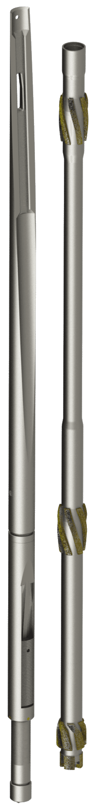

PL-WSMSA
ANTEUS™ whipstock system with mechanical anchor

The PL-WSMSA whipstock system with mechanical anchor deflects the milling bottomhole assembly (BHA) from the original wellbore axis with precision during casing window milling. The mechanical anchor can be deployed in casing strings with various wall thicknesses, which makes the system more versatile. The system orients and fixes the whipstock reliably, even under challenging downhole milling conditions.
- Casing string
- 5 1/2″ – 13 3/8″
- Sizes
- 56
- Line
- Sidetracking
APPLICATIONS
- Milling a window in casing strings
- Deflecting the drill string in a predetermined direction
- Controlled kickoff of a new wellbore
- Initiating lateral sidetracks
- Bypassing damaged or problematic intervals, fish or lost-in-hole equipment
Design advantages
- No hydraulic pressure required for setting
- Simple and robust design
- Quick and efficient setting procedure
- Whipstock concave available with 2°, 2.5° and 3° inclination angles
- Suitable for casing sizes from 5 1/2 in. to 13 3/8 in. with various wall thicknesses
- Retrievable design for recovery of the whipstock assembly
- Increased reliability in challenging downhole conditions
Equipment set includes


Items on request
On request


Sizes
Request PL-WSMSA
Tell us the casing, the depth and the conditions, and we will come back with a selection.
Contact us